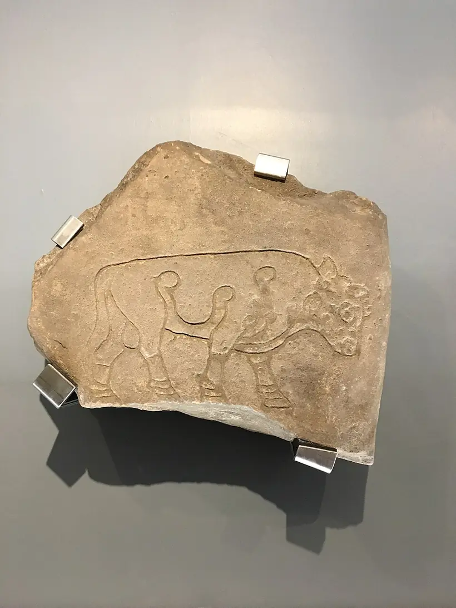
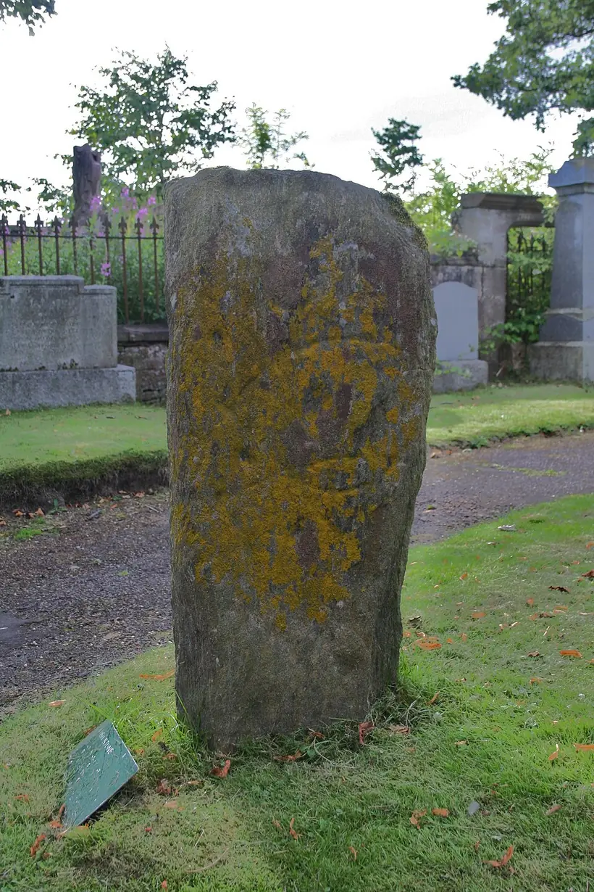
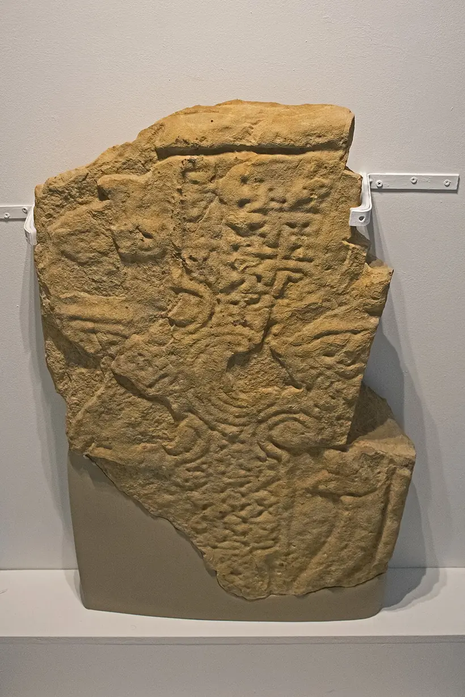

The people
The Picts were the peoples of northern and eastern Scotland in the late Roman and early medieval periods, forming a kingdom that fought and allied with Rome and later with the Scots. Their name comes from the Latin for 'painted'.
Maps, diagrams and images






The evidence
The evidence is carved symbol stones, a king-list, place names and archaeology. The Pictish language survives only in fragments — place names and a few words — and its classification is disputed. The symbols on the stones remain undeciphered.
The archive files it as documented because the kingdom and its material culture are well attested.
Documented: the kingdom and its history.
Documented: the symbol stones.
Documented: the king-list.
Lost: the language, except fragments.
The label: documented.
Why it is in the archive
Because it is a real people who became a blank in the record, and the blank is what the stories fill.
Open resources on this topic
- BookCritical Dissertations on the Origin, Antiquities, Language, Government, Manners, and Religion of the ancient — Macpherson, John · 1768 (Internet Archive, free to read)
- BookPicts : an introduction to the life of the Picts and the carved stones in the care of the Secretary of State f — Ritchie, Anna · 1989 (Internet Archive, free to read)
- BookThe Picts and the martyrs, or, Not welcome at all — Ransome, Arthur, 1884-1967, author · 2015 (Internet Archive, free to read)
- PapersOpen-access articles: DOAJ · PubMed Central · Internet Archive Scholar
- BooksPublic-domain and borrowable copies: Open Library · Project Gutenberg · Google Books
Cite this page
Momin, S. (2026). The Picts. The Larger World Archive. https://drsamonline.github.io/LARGE_GLOBE/picts.htmlMomin, Sohil. “The Picts.” The Larger World Archive, 2026, https://drsamonline.github.io/LARGE_GLOBE/picts.html.Momin, Sohil. “The Picts.” The Larger World Archive, 2026. https://drsamonline.github.io/LARGE_GLOBE/picts.html.@misc{the2026picts,
author = {Momin, Sohil},
title = {The Picts},
year = {2026},
howpublished = {The Larger World Archive},
url = {https://drsamonline.github.io/LARGE_GLOBE/picts.html},
note = {Last reviewed 20 November 2026}
}Last reviewed 20 November 2026 · Corrections policy · this page is not peer reviewed
Sources for this page
- Wikipedia, “Picts” — the peopleen.wikipedia.org
- Wikipedia, “Pictish stone” — the carvingsen.wikipedia.org
- Wikipedia, “Pictish language” — the languageen.wikipedia.org
- Wikipedia, “Kingdom of Alba” — the successoren.wikipedia.org